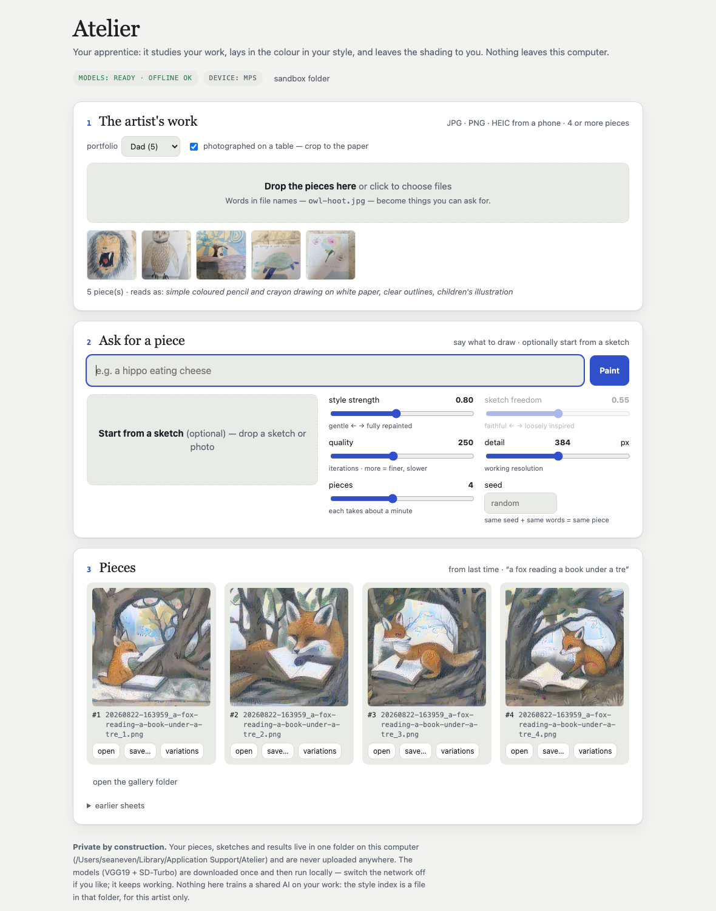

Paint anything in one artist's style — on their own computer.
Give Atelier a few of an artist's pieces and say what you'd like to see — a hippo eating cheese, the harbour at dusk, this sketch, finished. It paints it the way they paint. Their work never leaves the machine, and it is never used to train anyone's AI.
Free and open source. Unsigned builds (see the Download notes). The app fetches two pretrained models once (~3 GB), then runs offline.

The whole app is three benches: the artist's work · ask for a piece (with sliders for style strength, sketch freedom, quality, detail and how many) · the pieces.
How it works
Two pretrained models that are known to work, and one small index that is specific to the artist.
1
The artist's work becomes a style book.Drop in JPGs, PNGs or phone photos (HEIC is fine; photographed drawings are cropped to the sheet of paper). Atelier reads each piece's palette, tone and brush texture into a small per-artist index — a file in the app's folder, nothing more.
2
Your words are drawn.A text-to-image model (SD-Turbo, a diffusion UNet) draws what you describe — in the artist's medium, because the style book tells it whether this is coloured pencil on paper or oil on canvas. Or start from a sketch: the words reinterpret it as much or as little as you like.
3
It is repainted in the style.Neural style transfer (VGG19, the method behind the “deep style” apps) repaints the drawing with the artist's palette and brushwork, using the pieces your words point at. Mood words — warm, quiet, dramatic, dark — pick the pieces and grade the colour.
4
You choose.Ask for one piece or eight, turn the style up or down, keep a seed to get the same piece again, click any result for variations. Everything lands in a gallery folder you own.
Private by construction
Your art stays in one folder on your computer — and nowhere else.
No account, no upload, no server of ours. The app is a local program that opens a window.
The only network access is a one-time download of two public, pretrained models. After that, switch the network off: it keeps working.
Nothing here trains a shared model on your work. The “style book” is a small file describing this artist's palette and texture, stored in the app's folder and used only to paint for them. Delete the folder and it is gone.
Open source, so all of this can be checked — and the sandbox folder is a plain folder you can open any time from inside the app.
The knobs
Style strength
How hard the style is pushed onto the drawing: gentle tint → fully repainted brushwork.
Sketch freedom
With a sketch as the starting point: faithful to the sketch → only loosely inspired by it. Or repaint the sketch exactly as it is.
Quality · detail
Iterations and working resolution — finer results take longer. About a minute per piece on a recent laptop at the defaults.
Pieces · seed
How many to paint (they are ranked; the first is the one that took the style best) and an optional seed so the same words give the same piece again.
All builds: github.com/seaneven-web/atelier/releases. The builds are unsigned: on macOS right-click → Open the first time (Gatekeeper); on Windows choose “More info → Run anyway” (SmartScreen). First launch offers the one-time model download (~3 GB). Needs ~8 GB of RAM; a GPU is used when present, otherwise the CPU (about a minute per piece).
Or run it from source
git clone https://github.com/seaneven-web/atelier && cd atelier
python3 -m venv .venv && .venv/bin/pip install -r requirements.txt -r requirements-desktop.txt
.venv/bin/python atelier_app.py # the app
.venv/bin/python atelier.py paint "a hippo eating cheese" --portfolio ~/DadsArt # the command line
Honest limits
Style transfer carries an artist's palette, texture and tone very well; it carries their composition less well — the drawing's layout comes from the content model (or from your sketch, which is the best way to make it yours). More pieces help, and cleanly photographed pieces help most. A fine-tune of the content model on the artist's work (a LoRA) would learn composition too and is the natural next step; it needs a real GPU.